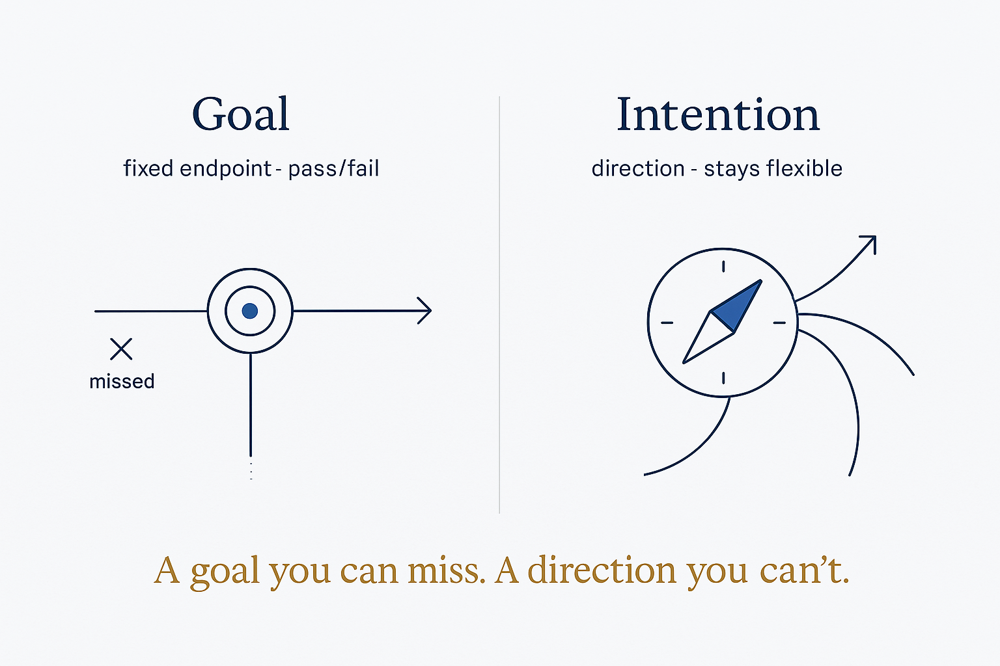

Intentions give direction and stay flexible; goals fix rigid endpoints with pass/fail pressure. Structure the direction, not the deadline.

Intentions give direction and stay flexible; goals fix rigid endpoints with pass/fail pressure. Structure the direction, not the deadline.
A goal is a fixed endpoint you either hit or miss — it carries a pass/fail charge and the performance pressure that comes with it. An intention names a direction and how you want to travel it, and stays open to revision as you learn. The distinction matters because life rarely rewards rigid endpoints: circumstances shift, better options appear, and a plan held too tightly turns adjustment into "failure." A target date can still be useful — as an orientation point, not a verdict. In the SBM frame, intentions are what a modeled self should capture alongside preferences: not just what you like but where you're heading, so the system can reflect intention back against lived data (daily notes, transactions, how the time was actually spent) — direction vs. realization, as reflection, never a scoreboard. You structure the direction so it can be revisited, precisely so you don't have to freeze the destination.